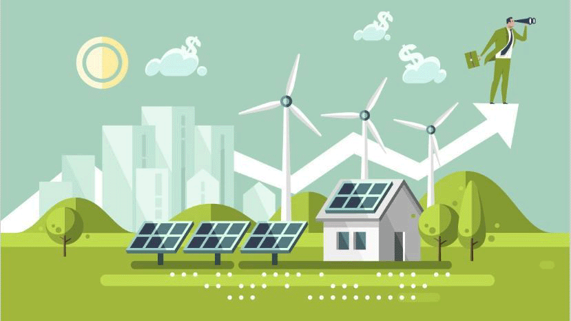
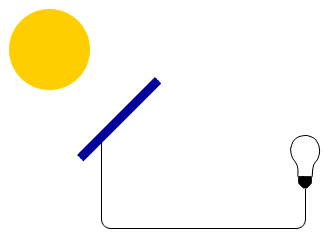
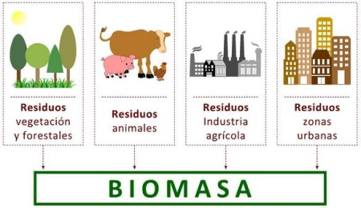
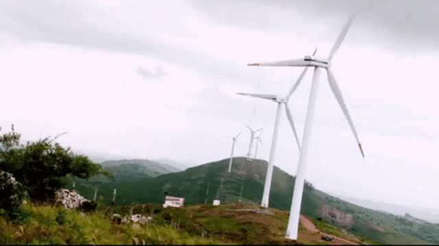
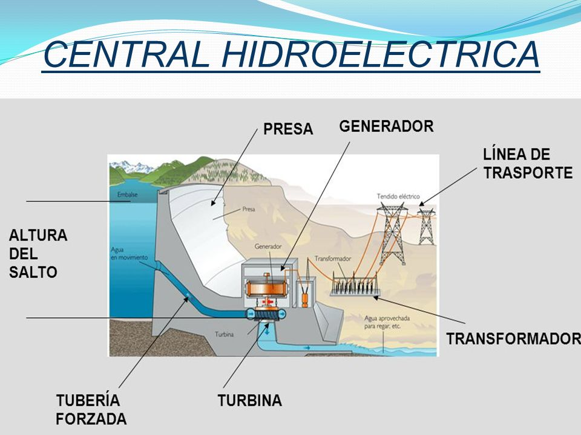

Energia Solar |
Turba o Biomasa |
Energia Eólica |
Energia Hidraulica |
Energía alternativa es un sinónimo para energía limpia, energía verde o energía renovable. Se consideran alternativas todas aquellas que provienen de recursos naturales y de fuentes inagotables, todas aquellas que, al producirlas, no contaminan.

La energía solar es aquella que obtenemos del sol. A través de placas solares se absorbe la radiación solar y se transforma en electricidad que puede ser almacenada o volcada a la red eléctrica. Luego, existe la energía solar termoeléctrica, que es aquella que utiliza la radiación solar para calentar un fluido (que puede ser agua), hasta que genere vapor, y accione una turbina que genere electricidad.

Esta energía alternativa es una de las formas más económicas y ecológicas de generar energía eléctrica en una central térmica. Consiste en la combustión de residuos orgánicos de origen animal y vegetal. Con producto biodegradable, como serrín, cortezas y todo aquello que pueda ir “al contenedor marrón”, se puede prensar un combustible que prenda el fuego a modo de yesca, siendo sustituible el carbón por este producto y, a gran escala, pudiendo ser utilizado para producción de energía de forma renovable.

En este caso la generación de electricidad se lleva a cabo con la fuerza del viento. Los molinos de viento que hemos visto cientos de veces cuando vamos en coche se sitúan en los denominados como parques eólicos y están conectados a generadores de electricidad que transforman la energía producida cuando el viento hace girar sus aspas.

La energía hidroeléctrica o hidráulica es otra de las energías alternativas más conocidas. Utiliza la fuerza del agua en su curso para generar la energía eléctrica y se produce, normalmente, en presas.
